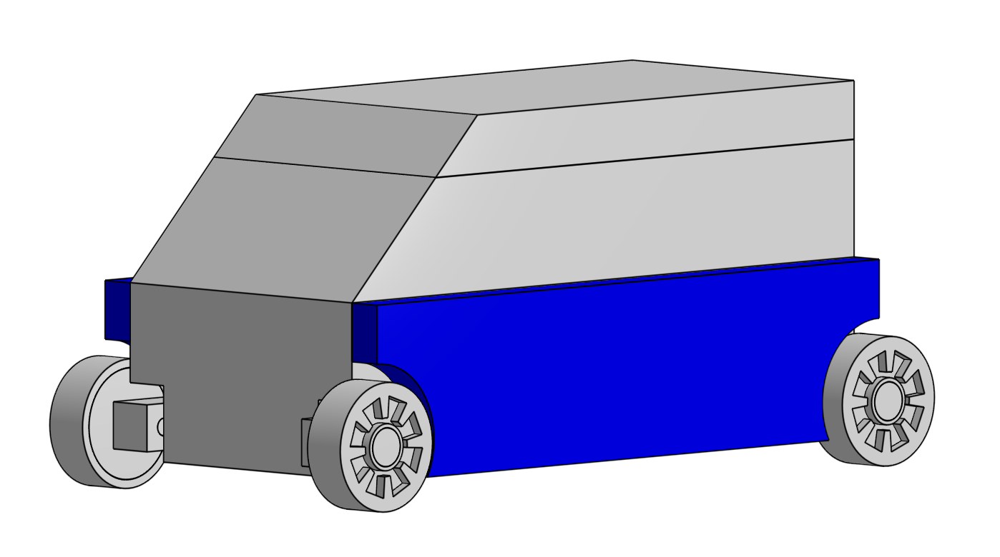

Optimisation de traînée par contrôle d'écoulement
Aperçu du projet
Dans le cadre de l'Electif d'Intégration Biomimetic Flow Control, ce challenge opposait 4 équipes de 8 étudiants, chacune encadrée par un enseignant-chercheur (ou post-doctorant).
L'objectif : réduire la traînée aérodynamique de prototypes de véhicules (SUV et berline) à l'échelle 1/25 en
combinant essais expérimentaux et simulations numériques.

Démarche
- Essais en soufflerie pour mesurer les performances aérodynamiques des prototypes.
- Simulations CFD pour analyser et prédire les écoulements avant fabrication.
- Itérations de conception CAO pour affiner la géométrie des prototypes.
- Fabrication et test de plusieurs versions du prototype à l'échelle 1/25.
Mon rôle
En tant que chef de groupe, j'ai piloté la répartition des tâches entre les 8 membres de l'équipe, coordonné le développement du prototype et assuré un suivi hebdomadaire de l'avancement auprès de l'encadrement pédagogique.
Compétences mobilisées
Équipe du projet
Rapport du projet
Le rapport complet du projet, incluant la méthodologie détaillée, les résultats des essais en soufflerie et des simulations CFD, est disponible ci-dessous.
Télécharger le PDF